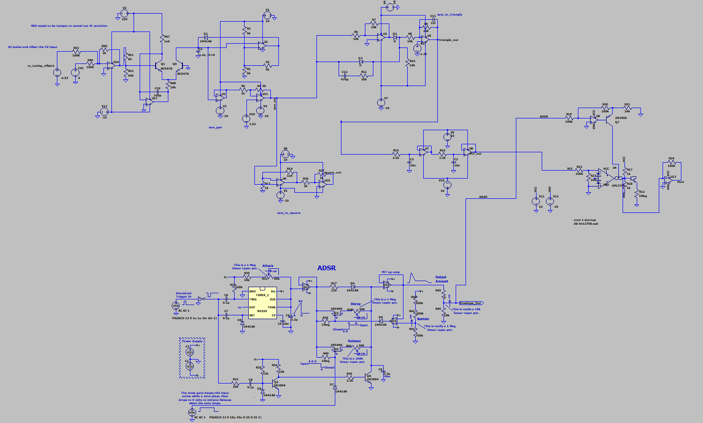

Featured Projects
-
But what is a Neutral chord? | Watch Here
An educational video exploring microtonal music concepts, including unorthodox tuning systems, just intonation, and the unique chords these systems introduce, such as the neutral, subminor, and supermajor triads. Animations were coded in Python with the use of the Manim and Manimusic libraries.
-
Rhythm Balance Pro | GitHub Repository
A C++ application that uses AI to help students solve rest-insertion problems in music theory. The application can either be used as a standalone, or in conjunction with both Audiveris (an OMR engine) and Musescore.
-
ToneRowGEN | GitHub Repository
A GUI application that generates and plays twelve-tone rows to aid avant-garde composers. Additional features powered by AI allow the user to increase the level of consonance in the resulting tone rows. The latter function was also used to research the limits of how far one can go to make twelve-tone music sound "consonant."
-
The Composer Who Never Existed | Watch Here
A musicology video that discusses the life, works, and impact of the fictitious composer P.D.Q. Bach, as well as his creator, the late Peter Schickele. Currently the only video on YouTube to explore this concept.
-
Economic Analog Synthesizer
A cheaper alternative to contemporary state-of-the art synthesizers found on today's market, geared towards cost-conscious musicians and beginners. Still a work in progress, the below image shows the current design for the VCO, VCF and VCA.
